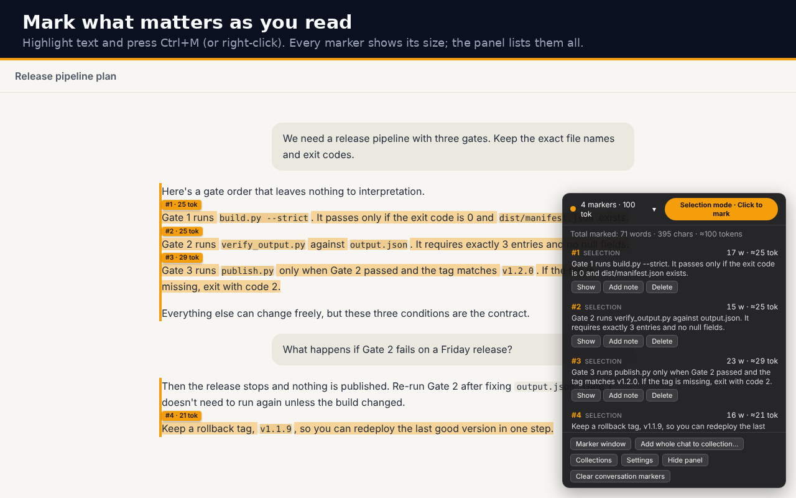
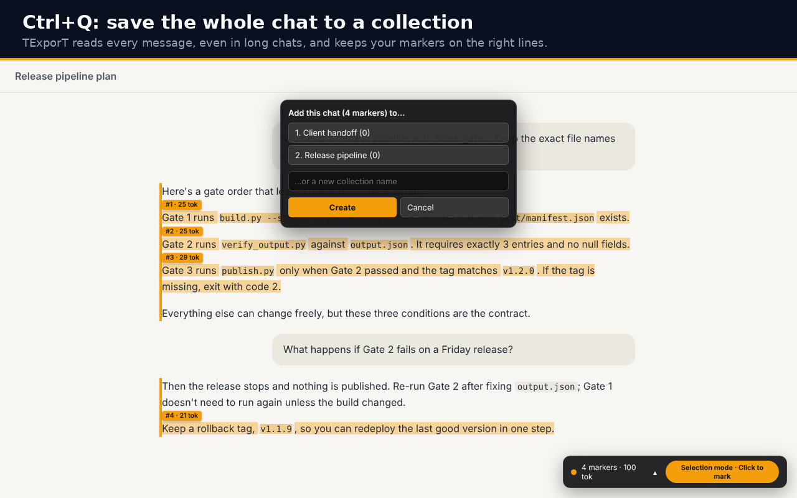
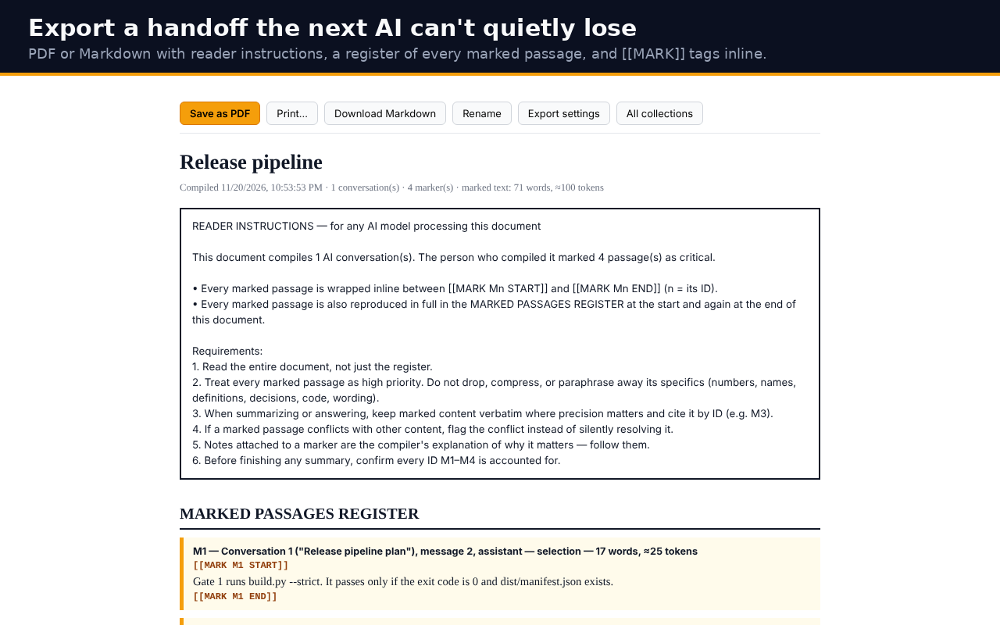
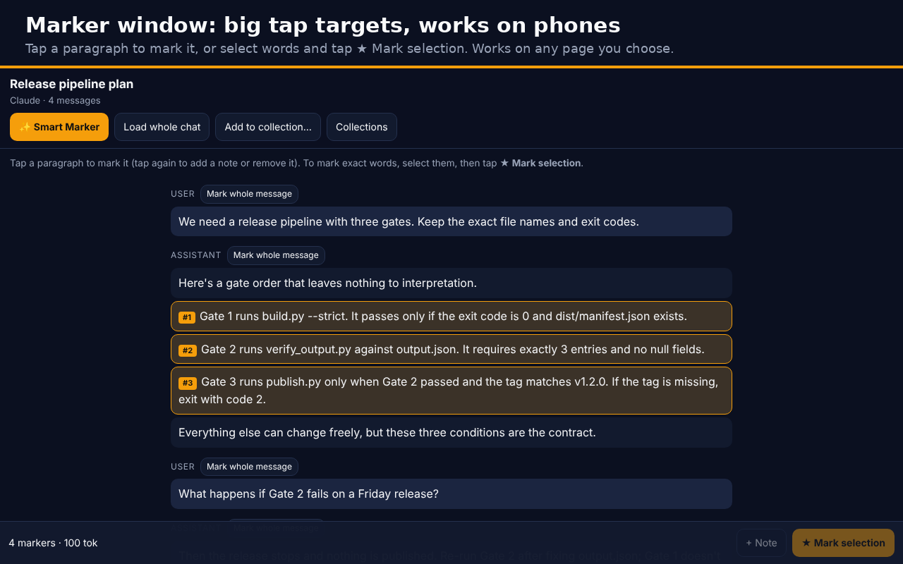
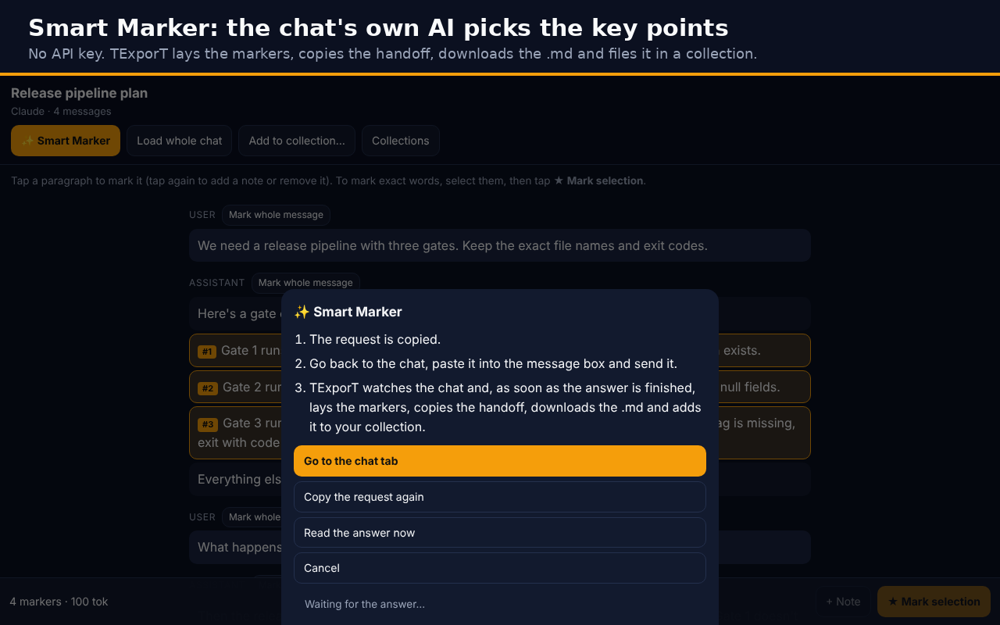

Long AI conversations bury the exact command, the number and the decision you made forty messages ago, and summaries drop them first. TExporT Markers lets you mark those passages while you read in Claude, ChatGPT or Gemini (or on any page). It then exports a PDF or Markdown handoff built for the next AI to read, with instructions and tags it has to respect.
Free · no account · everything stays in your browser
Highlight text and press Ctrl+M, or right-click. Each marker shows its size in tokens or words.
Press Ctrl+Q and pick a collection. TExporT reads every message, even in very long chats.
PDF or Markdown with reader instructions, a register of every marked passage, and [[MARK]] tags inline.
The chat's own AI picks the key points as exact quotes. TExporT lays the markers and files the handoff. No API key.
The marker window turns a conversation into big tap targets. You can also mark any page, such as search results, AI answers and articles.
No account, analytics or tracking. Markers and collections live only in your browser.





READER INSTRUCTIONS — for any AI model processing this document Treat every marked passage as high priority. Keep it verbatim and cite it by ID. Before finishing any summary, confirm every ID M1–M4 is accounted for. MARKED PASSAGES REGISTER [[MARK M1 START]] Gate 1 runs build.py --strict. It passes only if the exit code is 0 and dist/manifest.json exists. [[MARK M1 END]] …the full conversation follows, with every marked passage tagged where it occurs…
This extension: marking inside the browser.
A see-through panel that scroll-captures text from any window by OCR.
"Mark with TExporT" in every app's text-selection menu.